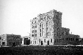
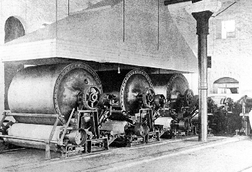
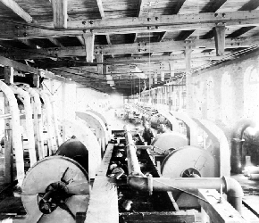
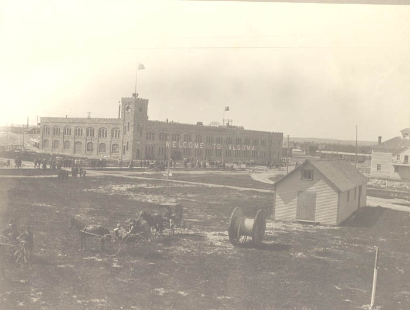

Home • Hydroelectric Power • Pulp & Paper • Transportation • Mining • Forestry • Algoma Steel • Algoma Tubes
Pulp & Paper
While engaged in negotiations with the Sault Ste. Marie Town Council for the purchase of the power installation, Francis H. Clergue and his colleague, Edward Douglas, traveled to Toronto. With the assistance of local lawyer, Henry C. Hamilton, Clergue secured the right to cut timber (except for pine) on 1,000 square miles of Crown Land surrounding the Town of Sault Ste. Marie. The grant was obtained partly on the strength of a promise made by Clergue to construct a pulp mill in Sault Ste. Marie. As a result, the Sault Ste. Marie Pulp and Paper Company was incorporated by a special act of the Province of Ontario in 1895. The incorporators, aside from Clergue and Douglas, were Frank S. Lewis and Samuel R. Shipley of Philadelphia and A.P. Bowler of New York. They simultaneously incorporated the Ontario Pulp and Paper Company. The purpose of this parallel company was to convert the pulp into newsprint. Although the Ontario company did not get off the ground during the Clergue years, it later proved to be an integral component of Sault Ste. Marie’s industrial infrastructure.
The ground pulpwood mill, which was constructed in 1895, was described as "the largest and most perfectly arranged and equipped mill in existence". Using more than 9,000 hydraulic horsepower to operate its machinery, the Company produced in excess of 1,000 tons of ground pulp daily. The capacity of the mill soon pushed the Sault Ste. Marie operation to the forefront of ground pulpwood producers.
|  |
Intimidated by the potential competition offered by the Sault mill, Clergue’s competitors cut their prices by 25% in an attempt to force him out of business. Clergue fought back by producing a superior product: pulp with reduced water content. Clergue and his engineering department developed a machine to extract much of the water content making it lighter and less costly to ship. When none of the existing paper machine manufacturers would produce the machinery to his specifications, he erected his own machine shop and foundry to create the machines he needed. These two operations produced all of the machinery used in the pulp mill.
|  |  |
The groundwood pulp mill with its specialized drying equipment was an important and financially lucrative aspect of the Consolidated Company. Unlike many of the Allied Companies which circulated their products and by-products internally without generating cash flow, the Pulp Company sold its products to outside markets creating an influx of outside monies.
Clergue secured permission from the Board of Directors to expand the pulp mill in May of 1899 by adding a Sulphite Mill. The Mill cost an estimated $100,000 to build and was initially expected to operate in conjunction with both the Ferro-Nickel Plant and the Sulphuric Acid Plant. Construction was completed in 1901 but it is doubtful that it ever reached its capacity of 60 tons per day. The Sulphite Mill proved to be a drain on the finances of the already strapped Consolidated Company.
In a somewhat curious move, Clergue announced plans to construct a paper mill on the American side of the border immediately upon completion of the Sulphite Mill. Needless to say, Canadian residents were outraged by his decision. The Michigan location was undoubtedly selected in order to circumvent the American tariff on newsprint but this logic held little sway with the citizens of Sault Ste. Marie, Ontario. Clergue, Douglas and a variety of American investors incorporated the Great Lakes Paper Mill in October, 1902. Although the foundations were laid, the mill was never constructed. Within weeks of the commencement of construction, the Consolidated experienced financial difficulties and work was stopped. The collapse of the Clergue industries in September, 1903 sealed the fate of the Great Lakes Paper Mill. Work was never resumed.
Francis H. Clergue was dismissed as General Manager of the Pulp Mill and forced to resign as a director and as President of the Board of Directors in April, 1903. In the course of events leading up to his termination, his colleague Edward Douglas conducted a thorough audit of the books of each of the Allied Companies and subsequently prepared financial statements for each. Douglas stated that as a result of poor and inefficient management, the Pulp Company had been consistently losing money from its inception.
Like the majority of the Allied Companies, the Pulp Company was forced to close its doors following the collapse of the Clergue industrial empire in September of 1903. It remained closed for a number of months and in receivership until 1905. Following restructuring of the Clergue industries in 1904, the Allied Companies became part of a new parent company, The Lake Superior Corporation. In 1911 the Lake Superior Corporation deceded that it would concentrate on its iron, steel and transporation activities and took steps to dispose of its holdings in orther areas including the Sault Ste. Marie Pulp and Paper Company. In February 1911, a new company was formed, the Lake Superior Paper Company Ltd. which received all the assets of the Sault Ste. Marie Pulp and Paper Company, as well as the sulphuric acid and reduction plant from the Lake Superior Power Company and the Algoma Commerical Company's timber rights, pulp wood stock and woods department equipment. Im 1913 the Abitibi Power and Paper Company acquired the Spanish River Pulp and Paper Mills Ltd. as well as four other Canadian paper companies. The financing of tehse mergers resulted in Abitibi going into receivership in 1932 until 1946. Abitibi continued to operate in Sault Ste. marie until 1984 when it was purchased by St. Marys Paper Ltd.
